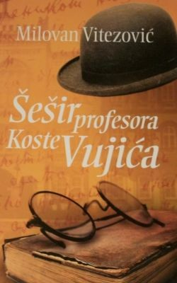

Омиљени филмови
У овој серији обрађује се истинита прича о познатом професору
немачког језика у Првој београдској гимназији, Кости Вујићу.
Обрађено је време када је професор Вујић био разредни старешина
матурантима који су касније постали интелектуални врх српског народа.
Његови ђаци, између осталих, били су: Михаило Петровић Алас,
Милорад Митровић, Јован Цвијић, Јаков Продановић, Павле Поповић,
Љубомир Стојановић …
